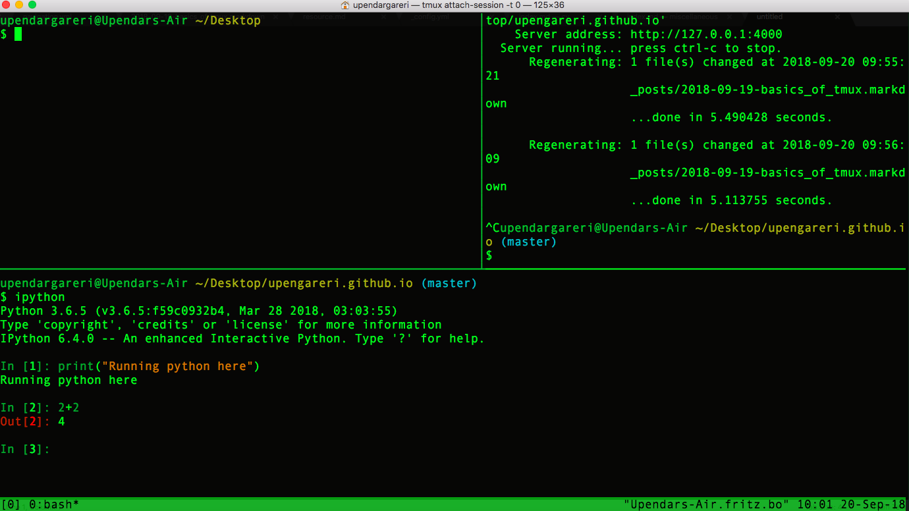

Basics of tmux
What is tmux?
It stands for terminal multiplexer. In simple terms, it can multiply a single terminal window into multiple windows.

Benefits
-
It lets us run and keep an eye on multiple programs at once. For example, in one window we can run some python code and in another window, we can start some development server and in another, we can train some machine learning model etc.
- Session remains alive even when the internet disconnects or when the computer sleeps.
- Many more, trust me.
Getting Started
To install on Mac:
brew install tmux
(assuming homebrew is installed)
To verify:
tmux -V
We start using tmux by creating a session. In one session we can create several window panes. We can create multiple sessions and several windows for every session. Here I’ll give an example of creating a single session and using/creating multiple windows within the session.
To check if a session is running:
tmux ls
Since we haven’t created any session, it would show
$ tmux ls no server running on /private/tmp/tmux-501/default
To create a session:
tmux
Note: A green bar will appear at the terminal bottom
Now, when you run tmux ls it will show 0: 1 windows…
Here, 0 is the name of the session (zero indexed). To create a session with a specific name, we can use
tmux new -s [name of session]
I prefer index to be just fine as I create only one session most of the time.
To go out from a session:
Ctrl+b d
Note: Press Ctrl b and release and then press d (here d means detach)
PREFIX
Ctrl+b is the default prefix of tmux and basically to type most tmux commands
- press
Ctrlandbtogether and release - then type any other command
To attach any session from list of sessions:
tmux attach-session -t [name of session]
To kill any session:
tmux kill-session -t [name of session]
To kill the server and thus all the sessions:
tmux kill-server
Now that we know how to create, detach, attach and kill session(s), let’s create multiple windows within a session. Assuming we are in a session (attached) -
To create a horizontal pane:
Ctrl+b "
To create a vertical pane:
Ctrl+b %
Note: Press Ctrl b together and then release after which press %(have to use shift button in some keyboards to press %).
Move to another pane:
Ctrl+b arrow_key
Kill current pane:
Ctrl+b x
Re-sizing current pane (expanding):
Ctrl+b :
(opens up the tmux prompt bar) and then in the tmux promt at the bottom type
resize-pane -D 2
Note: Here D means down and 2 means number of lines. Similarly U: UP, L: LEFT, R: RIGHT.
To zoom in and out one of the window panes:
Ctrl+b z
Summary of most basic commands:
tmux -> Starts a session
Ctrl+b " -> Creates horizontal pane
Ctrl+b % -> Creates vertical pane
Ctrl+b arrow_keys -> Move to a pane
Ctrl+b z -> Zoom in and out a window pane
tmux kill-server -> Kill server and all panes